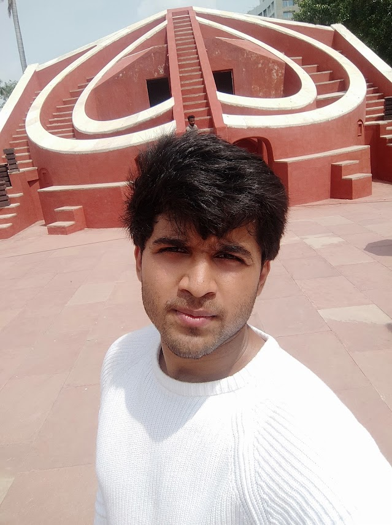

Lakshmi Prasad Dinesh

Introduction
Enthusiastic and results-oriented Full stack Web Developer with 3 years of experience in Web and AI technologies. Adept at Programming, web development, Automation, LLM, Project Management, Team Collaboration, Problem-Solving with a keen eye for computer science field.
Education
- B.E in Computer Science - NIE Institue of Technology(2018-2022)
- PUC in Science(PCMCs) - Sadvidya semi-residential collage(2016-2018)
Work Experience
Selenium Test Automation Intern - Tekarch Technology ltd
July 2021 - Sep 2021
- Designed and implemented automated test scripts using Selenium
- Collaborated with cross-functional teams to identify and resolve software defects, ensuring high-quality deliverables
- Executed regression and performance tests
Full Stack Web Developer Intern - Tekarch Technology ltd
July 2022 - Sep 2023
Skills
- Programming Language: C, C++, Java, JavaScript, Python
- Tools Used: Selenium, Node, AngularJS, FrontEnd, DBs
Awards And Certifications
- Udemy - Advance Data Structure
- Hackathon - 24 Hoours coding Challange(4th Place)
Other